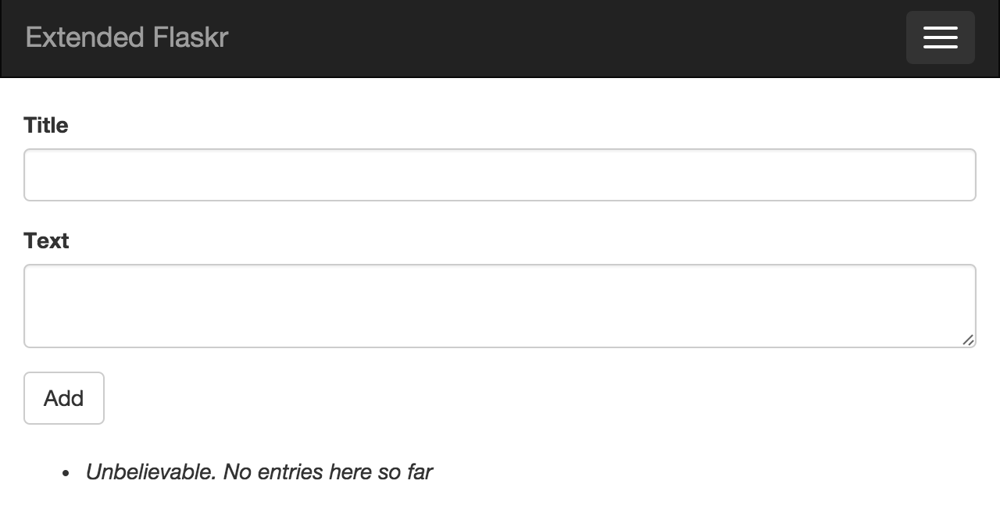

Flask History
Flask History
Flask evolution:
-

Template engine for Python (2006) -

WSGI library for Python (2007) -

A Microframework for Python based on good intentions (April 1, 2010)
Founder of Flask
And the man behind all of these tools...
Armin Ronacher
Application Overview
Extended Flaskr
What Are We Going to Build?
Something that can be named a Microblog!!
Application Setup
Clone the git repository:
$ git clone https://github.com/mxamin/exflaskr-irpycon-2015.git $ cd exflaskr-irpycon-2015
Create a virtual environment:
$ virtualenv venv $ source venv/bin/activate (venv) $ pip install -r requirements/production.txt
Initialize and run application:
$ python manage.py initapp $ python manage.py runserver
Flask Is Easy
Can Be Made Up and Running With Just A Few Line of Codes
Coding Flask for the First Time
Step 1/5: Install Flask Install Flask in a virtual environment
$ virtualenv venv $ source venv/bin/activate (venv) $ pip install flask
Coding Flask for the First Time (cont'd)
Step 2/5: Create an application instance
from flask import Flask app = Flask(__name__)
Coding Flask for the First Time (cont'd)
Step 3/5: Define route
from flask import Flask
app = Flask(__name__)
@app.route('/')
def index():
return '<h1>Flask is Easy!</h1>'
Coding Flask for the First Time (cont'd)
Step 4/5: Start development server
from flask import Flask
app = Flask(__name__)
@app.route('/')
def index():
return '<h1>Flask is Easy!</h1>'
if __name__=='__main__':
app.run(debug=True)
Coding Flask for the First Time (cont'd)
Step 5/5: Run as a normal Python script!
(venv) $ python flask_is_easy.py * Running on http://127.0.0.1:5000/ (Press CTRL+C to quit) * Restarting with stat
Project Template
Large Applications Structure
Recommonded by Miguel Grinberg
|- exflaskr-irpycon-2015/ <-- project folder
|- app/ <-- application folder
|- main/ <-- application blueprint
|- views.py <-- application routes
|- static/ <-- static files
|- templates/ <-- html files
|- __init__.py <-- application factory
|- models.py <-- database model
|- requirements/ <-- dependencies
|- tests/ <-- unit tests package
|- venv/ <-- virtual environment
|- config.py <-- configurations
|- manage.py <-- launch script
Configurations
Application settings for Development, Testing and Production purposes
class Config(object):
SQLALCHEMY_COMMIT_ON_TEARDOWN = True
class DevelopmentConfig(Config):
DEBUG = True
class TestingConfig(Config):
TESTING = True
class ProductionConfig(Config):
pass
config = {
'development': DevelopmentConfig,
'testing': TestingConfig,
'production': ProductionConfig,
'default': DevelopmentConfig
}
Application Factory
Create and configure application instance
from flask import Flask, current_app from config import config def create_app(config_name): app = Flask(__name__) app.config.from_object(config[config_name]) config[config_name].init_app(app) from .main import main as main_blueprint app.register_blueprint(main_blueprint) return app
Blueprints
Flask way of making application modular
from flask import Blueprint
main = Blueprint('main', __name__)
from . import views
from . import main
@main.route('/', methods=['GET', 'POST'])
def index():
return '<h1>Extended Flaskr is Working!</h1>'
Launch Script
Flask-Script: Add command line support to Flask
import os
from flask.ext.script import Manager
from app import create_app
app = create_app(os.getenv('EXFLASKR_CONFIG') or 'default')
manager = Manager(app)
if __name__ == '__main__':
manager.run()
(venv) $ python manage.py runserver
Testing Module
Test module definition
import unittest
from flask import current_app
from app import create_app
class BasicsTestCase(unittest.TestCase):
def setUp(self):
self.app = create_app('testing')
self.app_context = self.app.app_context()
self.app_context.push()
def tearDown(self):
self.app_context.pop()
def test_app_exists(self):
self.assertFalse(current_app is None)
def test_app_is_testing(self):
self.assertTrue(current_app.config['TESTING'])
Testing Module (cont'd)
Launch test module
# ...
@manager.command
def test():
from subprocess import call
call(['nosetests', '-v',
'--with-coverage', '--cover-package=app', '--cover-branches',
'--cover-erase', '--cover-html', '--cover-html-dir=cover'])
# ...
(venv) $ python manage.py test
Twitter Bootstrap Integration
Add Some Style
Flask-Bootstrap: Adds Bootstrap library features to our application
from flask.ext.bootstrap import Bootstrap bootstrap = Bootstrap() def create_app(config_name): # ... bootstrap.init_app(app) # .... return app
Application Template
Using Jinja2 template inheritance features
{% extends "base.html" %}
{% block page_content %}
<h1>Extended Flaskr is Working!<h1>
{% endblock %}
from flask import render_template
@main.route('/', methods=['GET', 'POST'])
def index():
return render_template('index.html')
Links in Flask
'url_for()': Flask use this function for file or even route reference
...
<a href="{{ url_for('main.index') }}">...</a>
...
<link href="{{ url_for('static', filename='favicon.ico') }}" ...>
Database
Flask-SQLAlchemy
Another extention which integrates SQLAlchemy into Flask
One database for each configuration setting
basedir = os.path.abspath(os.path.dirname(__file__))
class DevelopmentConfig(Config):
# ...
SQLALCHEMY_DATABASE_URI = os.environ.get('DEV_DATABASE_URL') or \
'sqlite:///' + os.path.join(basedir,
'data-dev.sqlite')
class TestingConfig(Config):
# ...
SQLALCHEMY_DATABASE_URI = os.environ.get('TEST_DATABASE_URL') or \
'sqlite:///' + os.path.join(basedir,
'data-test.sqlite')
class ProductionConfig(Config):
SQLALCHEMY_DATABASE_URI = os.environ.get('DATABASE_URL') or \
'sqlite:///' + os.path.join(basedir,
'data.sqlite')
Flask-SQLAlchemy (cont'd)
Initialize SQLAlchemy instance
from flask.ext.sqlalchemy import SQLAlchemy db = SQLAlchemy() def create_app(config_name): # ... db.init_app(app) # ... return app
Flask-SQLAlchemy (cont'd)
Create application database
from app import db
@manager.command
def initapp():
db.create_all()
logging.info('Application initialization completed successfully.')
Flask-SQLAlchemy (cont'd)
Model definition
from app import db class Entry(db.Model): __tablename__ = 'entries' id = db.Column(db.Integer, primary_key=True) title = db.Column(db.String(64), nullable=False) text = db.Column(db.Text, nullable=False)
Web Form
Entry Form
Flask-WTF: By using this extenstion we can create different forms based on Python WTForms module
from flask.ext.wtf import Form
from wtforms import StringField, TextAreaField, SubmitField
from wtforms.validators import DataRequired, Length
class EntryForm(Form):
title = StringField('Title', validators=[
DataRequired(),
Length(1, 64)
])
text = TextAreaField('Text', validators=[DataRequired()])
submit = SubmitField('Add')
Route
Declare Entry form and validate its input data
from flask import render_template, flash
from .forms import EntryForm
from app import db
from app.models import Entry
@main.route('/', methods=['GET', 'POST'])
def index():
form = EntryForm()
if form.validate_on_submit():
entry = Entry(title=form.title.data,
text=form.text.data)
db.session.add(entry)
db.session.commit()
flash('Entry added successfully.')
# clear form
form.title.data = None
form.text.data = None
entries = Entry.query.all()
return render_template('index.html', form=form, entries=entries)
Template
Add CSRF token and view Entry form with added entries below it
# ...
class Config(object):
# ...
SECRET_KEY = os.environ.get('SECRET_KEY') or 'hard_to_guess_string'
# ...
{% extends "base.html" %}
{% import "bootstrap/wtf.html" as wtf %}
{% block page_content %}
{{ wtf.quick_form(form)}}
<br>
<ul>
{% for entry in entries %}
<li><h3>{{ entry.title }}</h3>{{ entry.text|safe }}</li>
{% else %}
<li><em>Unbelievable. No entries here so far</em></li>
{% endfor %}
</ul>
{% endblock %}
Thank You